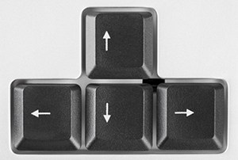

 Fes servir les fletxes del teclat per moure't(UP ARROW: cap amunt, DOWN ARROW: cap avall, LEFT ARROW: esquerra, RIGHT ARROW: dreta)
 El food et dóna Punts
El food et dóna Punts
 Les roques et treuen punts i vides si hi passes per sobre, només tens tres vides
Les roques et treuen punts i vides si hi passes per sobre, només tens tres vides
 El raim et dóna 50 segons i punts
El raim et dóna 50 segons i punts
Els pows et donen 1 vida més( només en pots tenir 3 com a màxim)
Tornar